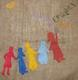

پذيرش > مقالات > گفتگو با اعضا > زهره اسد پور از فعالان کمپین در رشت:هیچ کس منکر تبعیض آمیز بودن قوانین (...)


 زهره اسد پور از فعالان کمپین در رشت:هیچ کس منکر تبعیض آمیز بودن قوانین نیست زهره اسد پور از فعالان کمپین در رشت:هیچ کس منکر تبعیض آمیز بودن قوانین نیست
5 مرداد 1386 - گفتگو:مریم حسین خواه - نسخه قابل چاپ
ورود کمپین به رشت، با همه شهرها متفاوت بود. کمپین در میان موجی از ارعاب و تهدید نیروهای امنتی به رشت رفت و زنان رشت عزم خود را جزم کرده بودند تا هر طور که هست تلاش برای تغییر قوانین تبعیض آمیز و گفتگو با مردم را شروع کنند.
«زهره اسد پور»، از فعالان کمپین در رشت که سابقه فعالیت دانشجویی را نیز در کارنامه خود دارد، درباره چگونگی فعالیت کمپین یک میلیون امضا در شهر رشت گفتگو کرده ایم. او که 18 تیر ماه 1378 به خاطر وقایع دانشجویی آن روزها به زندان رفته بود، در زمان بازداشتنش در بند زنان زندان رشت رنج های زنان این مرز و بوم را از نزدیک دیده است و همین تجربه ها او را به سوی فعالیت برای برابری سوق داده است.
شما کی و چطور با کمپین یک میلیون امضاء آشنا شدید؟
من از آغاز به کار کمپین از طریق سایت های زنان با اطلاع شدم، با خبری که مربوط به پانل آغاز به کار کمپین در موسسه رعد می شد که میهمانان با درهای بسته موسسه مواجه شدند بودند... .
چه فعالیت هایی در حوزه زنان داشته اید و چطور به این حوزه علاقه مند شدید؟
من معتقدم مسئله زنان و چرایی موقعیت و منزلت آنان در همه زنان وجود دارد، اما این دغدغه اغلب با سرکوب و یا توصیه های آن جهانی خاموش می شود. من چهارم یا پنجم دبستان بودم که در نامه ای به یکی از نمایندگان زن مجلس در آن زمان، پرسش های خود را درباره حقوق و جایگاه زنان (البته در آن حدی که دختری در آن سن می توانست بفهمد) از او پرسیدم. پاسخی که برایم آمد برگه ی کوچکی بود که در آن چند خط تایپی وجود داشت، چند خطی که پاسخ پرسش های مرا موکول می کرد به زمانی که بزرگتر شوم و بیشتر مطالعه کنم!
این اتفاقی است که اغلب برای تمامی سوال های ما می افتد! حواله کردن پاسخ آنها به زمانی دور... آنقدر دور که شاید دیگر سوال کردن از یادمان برود... .
اما پرسشگری من خاموش نشد و بعدها به عنوان فعال جنبش دانشجویی در دوره اصلاحات در دوره ای که به پای صندوق های رای کشاندن زنان تضمین پیروزی های سیاسی دولتمردان شد، به اعتراضی عمیق بدل شد، نادیده گرفته شدن خواست های زنان و تکرار همان تکریم های تجملاتی همیشگی از یک سو و مرد سالاری جنبش دانشجویی و تحقیر خواسته های صنفی و سیاسی دختران به عنوان بخش بزرگی از دانشجویان از سوی دیگر اهمیت فعالیت در حوزه زنان را بیش از پیش برایم آشکار ساخت.
تشکل مستقل دانشجویی که من از اعضای آن بودم متعهد به این بود که در هیئت موسس یا شورای مرکزی اش دختری عضو نباشد! هرچند این تمهیدی بود برای جلوگیری از جوسازی های اخلاقی علیه آن تشکل... اما راه حلی اینگونه محافظه کارانه، آن هم از تشکلی که ادعای مترقی بودن داشت، خود نشان از ناکارآمدی تفکری داشت که علیرغم ادعاهای رادیکال، حداقل در این بخش بسیار محافظه کارانه و معیوب عمل می کرد. البته ناگفته نماند این راه حل های محافظه کارنه هنوز در بسیاری از محافل روشنفکری دینی بی آنکه به چالشی جدی کشیده شود رایج است... .
پایان ناکام دوره اصلاحات برای ما که سربازان پورشور آن بودیم، ضربه شدیدی بود که بسیاری را که به آسیب شناسی آن پرداخته بودند به سوی تقویت جامعه مدنی و جنبش های اجتماعی کشاند.
ره توشه گرانقدر من از دوره اصلاحات دو ماه زندانی بود که در پی حوادث دانشجویی تیرماه 78 متحمل شدم و زندگی کردن با زنانی که تنها به مدد این بازداشت دو ماهه به واقعیت وجودشان واقف شدم! زنان بی نوایی که مهربانی شان مشعوفم می کرد و از بیچارگی ها یشان مستاصل می شدم! رقیه فلاح مهربان که به سنگسار محکوم بود و فرزندش را به زور از او جدا کرده بودند. و صغری نجف پور که از 13 سالگی به اعدام محکوم شده بود و یک بار هم پای چوبه دار رفته بود... . لیلا خانم وکیل بند که بیش از 20 سال بود که به اعدام محکوم بود! دختر بارداری که به جرم رابطه نامشروع زندان بود و کافیه که دخترش را در زندان به دنیا آورده بود... مرضیه که برای دوازدهمین بار به جرم سرقت به زندان افتاده بود... معصومه روسپی که شوهر معتادش گوشواره های دخترش را فروخته بود و آن روزی که معصوم دخترش را بی گوشواره دید تا صبح نخوابید و قدم زد... .
همه این تجربه های تلخ باعث شد تا به طور جدی به فعالیت های زنان روی بیاورم. راه اندازی نشریه دانشجویی شالیز که تحریریه ای زنانه دارد و مباحث زنان بخش حذف نشدنی آن است، برگزاری مراسم گرامی داشت 8 مارس، در دانشگاه و در شهر رشت، برگزاری نمایشگاه کتاب به مناسبت 8 مارس و تهیه و توزیع بروشور از فعالیت های من و دوستانم در حوزه زنان پیش از پیوستن به کمپین است.
دیگر فعالان اجتماعی رشت چقدر به حوزه زنان توجه داشتند و اصولا قبل از آمدن کمپین به رشت، اوضاع فعالیت های حوزه زنان در شهر شما چطور بود؟
پیش از شروع کمپین فعالیت در حوزه زنان تنها توسط محافل محدودی دنبال می شد. در رشت هیچ NGO مستقلی که در حوزه زنان فعالیت کند وجود ندارد. فعالان زنان در رشت با تهیه و توزیع بروشور به مناسبت های مختلف و یا برگزاری مراسم در بزرگداشت روزهایی چون 8 مارس و روز جهانی محو خشونت علیه زنان فعالیت دارند.
ما جمع دوستانه ای بودیم که برای پیوستن به کمپین بحث های بسیاری در میان ما مطرح شد اما نهایتاً علیرغم نقدهایی که به کمپین داشتیم(نقد درون دینی قوانین، مرکز گرایی در طراحی کمپین و...) تصمیم به پیوستن به کمپین گرفتیم.
این فعالیت ها از کی به کمپین وصل شد؟
اولین کارگاه کمپین در 27 بهمن 85 در رشت برگزار شد، این کارگاه علی رغم تهدیدات اداره اطلاعات رشت به شکل موفقیت آمیزی برگزار شد و از همان روزها، کمپین فعالیت رسمی خود را در رشت آغاز کرد.
این آغاز به کار رسمی کمپین برای شما خیلی هم آسان و کم هزینه نبوده، کمی در مورد روند برگزاری کارگاه کمپین در رشت و ماجراهایی که با آن دست به گریبان بودی توضیح می دهی؟
اولین کارگاه آموزشی کمپین با حضور آموزشگرانی از تهران برگزار شد و در آغاز قرار بود این کارگاه با حضور 30 نفر و در شهرکی در نزدیکی انزلی برگزار شود اما روز پیش از برگزاری کارگاه من تلفنی به اداره اطلاعات احضار شدم البته آنها این "دعوت را" دیداری دوستانه می دانستند! دیدار دوستانه ای که شامل تهدید به بازداشت و ممانعت از ادامه تحصیل و اصرار به رفتن تعهد برای عدم همکاری با کمپین و توصیه به اینکه به فکر دخترم باشم و این کارها را رها کنم و... بود.
احضار من به طلاعات مصادف شد با انصراف مالک منزلی که قرار بود کارگاه در انجا برگزار شود، اما با وجود همه این ها(احضار من به اطلاعات و تهدید های تلویحی آن ها و انصراف صاحبخانه) در چند ساعتی که به شروع کارگاه مانده بود تصمیم گرفتیم محل تشکیل کارگاه را تغییر دهیم و این بار به علت محدودیت جا، کارگاه را با تعداد محدودتری برگزارکنیم که خوشبختانه کارگاه به خوبی برگزار شد.
این کارگاه چقدر در روند فعالیت های شما موثر بود و پس از آن کار را چطور ادامه دادید؟
پس از اولین کارگاه برای داوطلبان جدید کارگاه دیگری نیز تشکیل دادیم که آموزشگران از خودرشت بودند. داوطلبان همگی زن هستند و اغلب دانشجویند. هماهنگی داوطلبین با تقسیم وظایفی که متتناسب با حجم کارهای انجام شده است انجام می شود. تشکیل کارگاه با توجه به اینکه آشنایی نسبی با قوانین وهمچنین بحث پیرامون سوالات و انتقادات نسبت به کمپین بخش اصلی ان است تاثیر بسیار مثبتی بر داوطلبین دارد. داوطلبین با شرکت در کارگاه علاوه بر اینکه درکی واقع بینانه از فعالیت برای کمپین و مسایل و مخاطراتی که این فعالیت ممکن است در پی داشته باشد کسب می کنند با ارتباط ارگانیکی که با دیگر داوطلبان ایجاد می کنند به احساس تعلق گران قدری دست می یابند که موجب می شود تا خود را عضو خانواده بزرگ کمپین که بخش بزرگی از فعالین زنان را شامل است، بدانند.
روشهای ارتباطی تان چطور است و به چه طریقی با اعضای کمپین رشت در ارتباط هستید؟
در حال حاضر شیوه ارتباطی ما بیشتر حضوری و تا حدودی نیز از طریق ایمیل است، البته در صورت گسترده تر شدن فعالیت های داوطلبان امکان ایجاد سایت مستقل نیز وجود دارد.
چند نفر در کمپین رشت فعال هستند؟
در حال حاضر حدود 15 نفر فعالانه با کمپین همکاری می کنند که همگی زن هستند، البته مردان نیز کم و بیش در جمع آوری امضاء همکاری دارند. فعلاً داوطلبین در دو کمیته داوطلبان و تدارکات هماهنگ می شوند.
چه برنامه هایی برای ادامه فعالیت کمپین در رشت دارید؟
مهمترین چیزی که باید به آن بپردازیم جذب داوطلبان است و همگام با آن قوی تر کردن بنیان های تئوریک داوطلبین و وارد کردن آنان به مباحثات فمنیستی.
استقبال مردم شهرتان از کمپین چطور بوده است؟
هرچند برخوردهای اخیر با فعالین زنان تاثیر مخربی در استقبال از کمپین گذاشته است و این موضوعی غیر قابل انکار است اما با این حال استقبال ار کمپین همچنان بسیار خوب است.ممکن است بعضی از مردم این تلاش را در جهت تغییر قوانین بی نتیجه بدانند و یا حتی نگران پیامدهای امضاء کردن باشند اما هیچ کس منکر تبعیض آمیز بودن قوانین نیست.
فعالان اجتماعی چطور؟
استقبال فعالان اجتماعی و سازمان های غیر دولتی نیز بسیار خوب بوده است.
کمی هم از تجربه هایت در جمع آوری امضا و گفتگو با مردم می گویی؟
یک بار در آرایشگاهی درباره کمپین حرف زدم، همه آنهایی که حضور داشتند امضاء کردند، زن جوانی با ناامیدی گفت: اینکارها فایده ندارد زیرا مردان تغییر قوانین را نخواهند پذیرفت. به او گفتم: اشتباه می کند و مردان بسیاری مدافع حقوق زنان هستند. به او از همسرم گفتم که علاوه بر اینکه امضاء کرده است در جمع آوری امضاء نیز به من کمک می کند بعداً دانستم زن جوان که دو سال از ازدواجش می گذشت پس از ازدواج، به حکم! همسرش نه تنها شغل خود را از دست داده بود و خانه نشین شده بود بلکه بیش از 9 ماه نیز در خانه محبوس بوده و حتی اجازه دیدن والدینش را نداشته است و اکنون مدتی است درگیر و دار طلاق است... !
با خود اندیشیدم اینکه امثال من با اینکه آسیب های قانونی شدیدی ندیده ایم پیگیر احقاق حقوق زنانی چون اوهستیم، چقدر می تواند موجب دلگرمی او شود! و این احساس تعلق، این تلاش برای تغییری که بسیار بیش از ما زنان بی پناه جامعه از آن متمتع می شوند، پاداش دلگرم کننده ای برای من بوده است.
ارسال به
بالاترین
،
توییتر
،
فریندفید
،
فیسبوک
در همين بخش :
 8 مارس روزی که نمی توان از ما دریغ کرد 8 مارس روزی که نمی توان از ما دریغ کرد
با طلاق توافقی از حقارت و کتک و فحش رها شدم /گزارشی از دادگاه محلاتی: مریم مالک
تجمع مادران عزادار در رشت
تغییر ممکن است/ جلوه جواهری(26 روز پس از بازداشت کاوه مظفری)
گامهایی که با تزلزل نا آشنایند/ گرامی داشت چهلم ندا در رشت
ديگر بخش ها :
طرح یک میلیون امضا
|
مقالات
|
سایت نوشته ها
|
اخبار
|
گزارش كمپين
|
گفت و گو
|
علیه سکوت
|
كوچه به كوچه
|
نامه های شما
|
گزارش ویژه
|
گفتگو با اعضا
|
ویژه سالگرد کمپین
|
تصویر برابری
|
دل آرام علی
|
تریبون
|
مقالات
|
تاریخ شفاهی
|
خارج از چارچوب
|
کتابخانه
|
درباره کمپین
|
کمپین در شهرها
|
کمپین در بند
|
صدای تغییر
|
ویژه 22 خرداد
|
لایحه حمایت از خانواده
|
گالری
|
عشا مومنی
|
امیر یعقوبعلی
|
خدیجه مقدم
|
راحله عسگری زاده و نسیم خسروی
|
پروین اردلان،جلوه جواهری، مریم حسین خواه، ناهید کشاورز
|
زینب پیغمبرزاده
|
سعیده امین، سارا ایمانیان، محبوبه حسین زاده، ناهید کشاورز و همایون نامی
|
احترام شادفر
|
نسیم سرابندی زاده،فاطمه دهدشتی
|
وبلاگ مهمان
|
پرونده خرم آباد
|
دستگیری ها
|
مریم مالک
|
پرستو اللهیاری
|
مهرنوش اعتمادی
|
سمیه رشیدی
|
Other Languages
|
همراهان
|
«فراخوان کمپین ده روز با بهاره هدایت»
| English
|